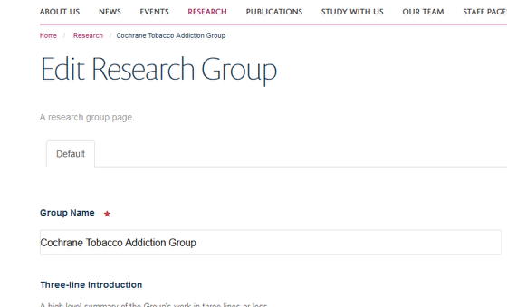

Note
These user guides are being phased out and replaced with the guides on Haiku Knowledge Base
This shows you how to delete a Research Group from a Research Theme.
Research Themes are allocated to Research Groups. You need to go to the Research Group page to delete it from the Research Theme.
Go to your Research Group. Click on Edit on the toolbar at the top of the page to bring up the editing interface:
Click on the Save button at the bottom of the page.